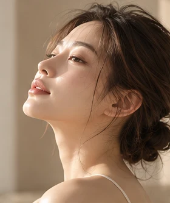
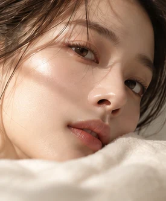
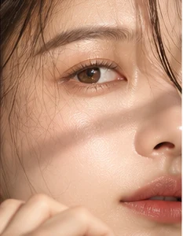
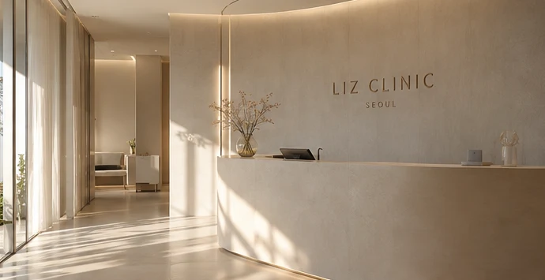
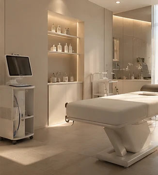
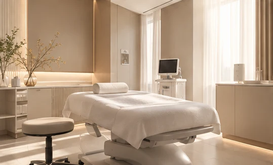
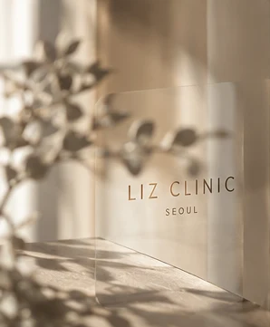

01 / TIME & BALANCE
Anti-Aging
시간의 흔적을 지우기보다, 지금의 피부에 필요한 관리를 살펴봅니다. 탄력 변화와 피부 상태, 원하는 관리 범위를 함께 이야기합니다.
탄력 고민 살펴보기BEFORE & AFTER / INTERACTION DEMO
비포 이미지는 브랜드 모델 사진에 피부결과 트러블을 AI로 추가한 가상 이미지이며, 애프터 이미지는 편집 전 원본입니다. 실제 환자의 시술 전후나 피부 개선 결과를 보여주지 않습니다.
비교 경계선이 좌우로 자동 이동하며 흑백 비포와 컬러 애프터를 보여줍니다. 천천히 살펴보고 싶을 때는 아래 버튼으로 일시정지할 수 있습니다.
AI 편집 데모 · 실제 환자 및 치료 결과 아님 BEFORE · 흑백 / AI 편집AFTER · 컬러 원본
BEFORE · 흑백 / AI 편집AFTER · 컬러 원본
비포는 AI 피부 편집 이미지 · 실제 시술 전후 비교 아님
PERSONALIZED SOLUTION
당신의 피부 고민부터 살펴보세요.
피부 고민을 선택하면시술 적합성은 개인의 피부 상태에 따라 의료진 상담을 통해 결정됩니다.
장비 이미지는 AI로 제작한 콘셉트 비주얼이며, 제조사의 공식 제품 사진이 아닙니다.
BRAND & DOCTOR PHILOSOPHY
같은 피부 고민도 시작점은 다릅니다. 리즈 클리닉이 지향하는 진료는 현재의 피부 상태와 일상, 이전 관리 경험을 충분히 이해하는 것에서 출발합니다.
1:1 상담을 통해 기대하는 변화와 걱정되는 점을 나누고, 가능한 선택지와 한계를 함께 살펴봅니다. 시술이 필요한지부터 차분하게 판단하는 것이 맞춤 진료의 기준입니다.
의료진 성명·사진·전문분야와 약력은 실제 정보 확인 후 공개할 예정입니다. 현재 특정 의료진의 경력이나 자격을 소개하지 않습니다.
상담 과정 살펴보기SIGNATURE PROGRAMS
하나의 시술보다 중요한 것은 관리의 방향입니다.
지금의 피부와 앞으로의 일상을 함께 고려합니다.

시간의 흔적을 지우기보다, 지금의 피부에 필요한 관리를 살펴봅니다. 탄력 변화와 피부 상태, 원하는 관리 범위를 함께 이야기합니다.
탄력 고민 살펴보기
피부 톤이 달라 보이는 이유부터 확인합니다. 색소의 특성과 자외선 노출, 생활 속 관리 습관을 함께 살펴보는 접근입니다.
색소 고민 살펴보기
모공과 피부결, 건조함은 피부 컨디션과 연결되어 있습니다. 민감도와 회복 여유까지 고려해 무리 없는 관리 방향을 상담합니다.
피부결 고민 살펴보기각자의 얼굴이 가진 균형을 존중합니다. 피부 탄력과 얼굴의 구조를 함께 살펴보고, 원하는 방향과 가능한 범위를 충분히 나눕니다.
페이스 라인 살펴보기프로그램은 브랜드 방향을 설명하는 데모입니다. 개인별 시술 구성이나 효과를 의미하지 않으며, 실제 계획은 의료진 상담 후 결정됩니다.
THE LIZ EXPERIENCE
충분히 이해하고 결정할 수 있도록.
리즈가 지향하는 진료 흐름을 소개합니다.
가장 신경 쓰이는 변화와 원하는 관리 방향을 이야기합니다. 이전 시술 경험과 일상 속 관리 습관도 함께 나눕니다.
피부 상태와 민감도, 시술 이력을 확인합니다. 복용 중인 약과 알레르기 등 상담에 필요한 정보도 살펴봅니다.
가능한 방법과 예상되는 불편, 회복 기간을 안내합니다. 충분한 설명을 듣고 적용 여부를 결정하는 과정입니다.
진료 계획에 따라 진행하고, 관리 시 유의할 점을 안내합니다. 이후 확인이 필요한 변화와 문의 방법도 설명합니다.
진료 과정은 데모 안내이며 실제 운영 시 의료진의 판단과 개인의 상태에 따라 달라질 수 있습니다.
CLINIC SPACE
따뜻한 빛과 차분한 질감.
상담과 관리에 집중할 수 있는 공간을 지향합니다.

리셉션 차분하게 시작하는 첫 만남

상담 공간 피부 이야기에 집중하는 시간

시술 공간 세심한 관리를 위한 환경

대기 공간 잠시 숨을 고르는 여유
모든 공간 이미지는 제공된 AI 브랜드 콘셉트 이미지입니다. 실제 병원의 내부나 시설을 촬영한 사진이 아닙니다.
CONSULTATION & RESERVATION
어떤 시술을 받을지 미리 정하지 않아도 괜찮습니다.
현재의 고민과 궁금한 점부터 차근차근 살펴봅니다.
FIND LIZ
브랜드의 가상 위치는 서울특별시 강남구 도산대로 일대입니다. 특정 건물이나 실제 의료기관을 안내하는 주소가 아닙니다.